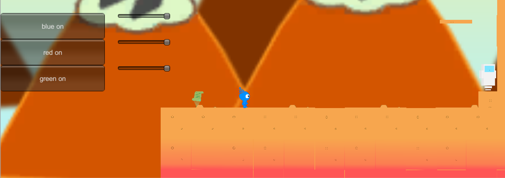

Other
I have worked on a few other projects that do not fit cleanly into a single category. Do not let the categorization of ‘other’ dampen these projects; in some ways these projects are the most impressive and important. Two of the projects which currently fall into this category are Codex, which is a video game a team and I made, and PiRO, which is an organization I co-founded which helps teach high school students about computer science.
Codex
My freshmen year of college I made a video game with the video game programming special interest group at Mizzou. I led a team primarily comprised of 2 other freshmen. Codex is a 2D side scroller where the character, Codex, can manipulate the code of his own game. Codex might turn off the gravity, change his color, or infect the AI of his enemies to overcome obstacles and complete a level. Codex was developed using Unity and C#. I learned a great deal about project management and video game development because of Codex.

iOS SIG Leader
My sophomore year of college I led a special interest group which taught my peers iOS development. At our SIG meetings I would go over different aspects of iOS and help members of the SIG develop the apps they wanted to develop. The SIG primarily focused on Swift. I learned how to adequately form curriculums because of the iOS SIG and also how to run small meetings.
PiRO
PiRO is an organization I co-founded devoted to teaching high school students computer science education by helping them build the apps they want to build. I co-founded PiRO toward the end of my sophomore year of college because many high schools in Missouri were not even teaching computer science and those that were did not do a good enough job. PiRO encourages students to build what they want to build because I believe programming is best taught through hands on experiences. I also believe that many aspects of engineering can only be taught through hands on experiences.
Building PiRO was a new experience for me. I had to solve a problem with a far less well-defined solution than might be found in programming. Also I had to do a lot of business work and bureaucracy defeating to get PiRO into a high school. Eventually my co-founder and I got PiRO into a local high school and began work with the high school programming club to build their first website. We taught the students HTML and CSS, but more importantly we helped them design and engineer their website. Although the students had been teaching themselves HTML and CSS for weeks, they struggled to come up with a good design for their website and they struggled to find technologies to build their website. We referred them to a variety of technologies they could use for their website, and we helped them come up with a good design and begin work on their website.
PiRO is teaching me many lessons. Among these lessons is how to cut through bureaucracy, how to lead large groups of people, how to simply communicate complex ideas, and that I can have a great impact on my community. PiRO also solidifies my ability to lead teams of engineers to build products. PiRO is currently in one high school, but we have plans for expansion.